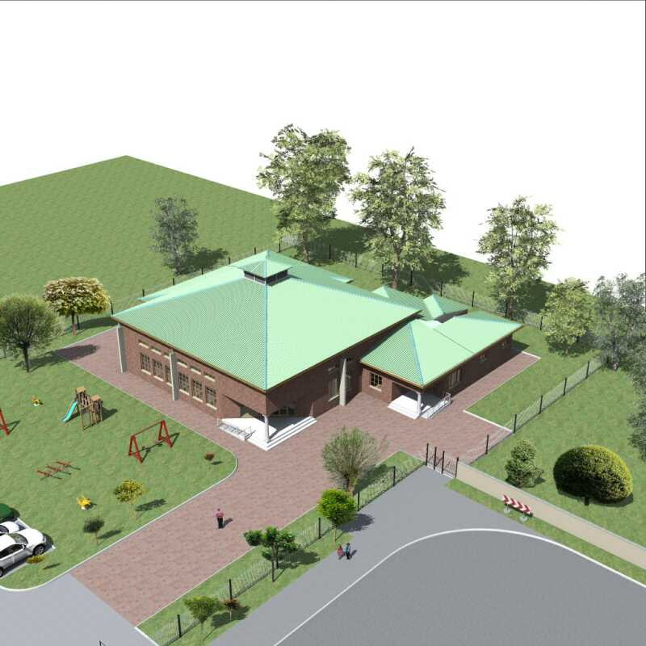

Architecture & Design
Concepts, schematic designs, detailed designs, construction and contract management, building condition assessments and audits.
Explore →Our multidisciplinary offering spans architecture, quantity surveying, civil & structural engineering, project management and occupational health & safety, alongside building delivery services.
Concepts, schematic designs, detailed designs, construction and contract management, building condition assessments and audits.
Explore →Quantity surveying support focused on informed decisions around cost efficiency in design and project implementation.
Discuss →Design and site supervision for structural steel and reinforced concrete buildings, high and low rise buildings, water and wastewater designs, warehouses and sporting facilities.
Discuss →Risk analysis, design review, professional-team coordination, project programming and quality control.
Explore →Our OHS approach supports compliant engineering practices, monitoring and regular audits throughout project delivery.
Discuss →General building, roofing, ceilings, plumbing, electrical, tiling, renovations & upgrades, material procurement and site control.
Explore →Construction documentation is coordinated and plan approval is sought from the relevant local authorities as part of the project approval process.
Discuss your project →
Project planning imagery.
The profile frames the methodology around design excellence, design innovation, sound project management and environmental care.
Briefing, project initiation, preliminary scope and pre-feasibility work.
Conceptual designs, preliminary cost estimates and project implementation planning.
Design development, construction methods, tender documentation and updated programme.
Construction documentation, consultant coordination and local-authority plan approval.
Tender adjudication, contractor appointment, programme monitoring and progress certificates.
Completion certification, as-built drawings and closeout reporting.